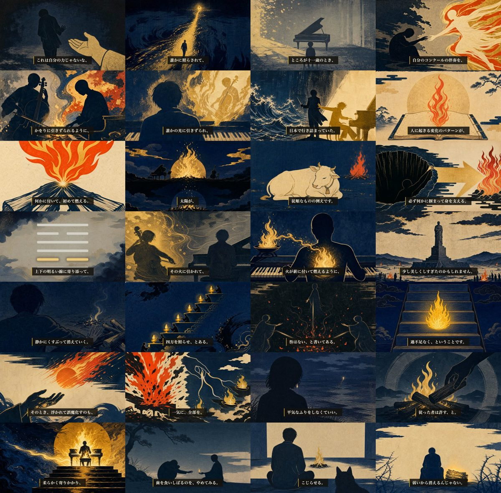

content/063 ／ 8分29秒 ／ H58 痛み先頭コホート ／ 2026-07-25
essay-meta-{id}.json の gapSec を新設。下の動画・コンタクトシートはこの修正を反映した再レンダ版（8分29秒）に差し替え済みです。
機械ゲート（TTS発音検証）が拾った、台本 full_script.json の tts_text（読みの注記）の誤字です。字幕に出る本文は元から正しく、音声も正しく喋っています。注記だけが1文字欠けていました。
該当シーン V_03_02b（幕3・種明かし）。字幕本文は「セットになった卦なんです。」で変更なし。
この修正で台本ファイルのハッシュが変わるため、ハーネスの規約どおり 選定（bon）→ fork独立採点 → preflight を取り直しました（採点 92点・冒頭ゲート/物語橋ゲートとも通過）。承認は受領済み（akapenマーカーに記録・script/visualsゲートとも復旧）。
※ 共有用の軽量版（854×480・14MB）。本番は 1920×1080 / 751MB（releases/063/essay-063.mp4）。

各シーン中央のフレーム。木版浮世絵で統一・顔なし・画像内に文字なし・シーン境界の黒落ちなし。
| ゲート | 結果 | 中身 |
|---|---|---|
| script preflight | PASS | 幕構成・文字数・AI臭9.0/100・事実チェック11件すべて一次確認済 |
| 台本 fork独立採点 | 92点 | codex独立採点（threshold 90）・冒頭ゲート✅・物語橋ゲート✅ |
| visuals preflight | PASS | 28カット・固定スタイル行一字一句・Cフラット混入なし・六爻図GUA6生成済 |
| 画像 fork独立採点 | 91点 | ブラインド識別監査 全28「不明」＝作品もキャラも特定されない（法務方針どおり） |
| TTS発音検証 | 誤読0件 | 修正前は45件（卦→ケ／離→ハナレ／公生→キミオ／薪→タキギ等）→ 読み辞書overrideで解消 |
| timing preflight | PASS | 28シーン 字幕同期・語境界・冒頭オーバーレイ（四月は君の嘘 有馬公生／易経・離） |
| mix preflight（黒落ち） | PASS | 尺509.5s（期待510.4s）・ピーク−3.9dB・幕間BGM−34.4dB・シーン境界27箇所すべて黒落ちなし（警告0件） |
| 🆕 字幕の連続性 | 瞬断0件 | 境界前後を1フレーム刻みで実測。1,008点走査でも欠落0 |
content/063/tts_overrides.json を新設。「離」は『離れる』を壊さないよう文脈キー（離の／離とは／離という）に限定しています。scripts/tts_pron_verify.py / tts_verify.py）。基準を緩めたのではなく、正しい発音を誤読と誤判定していた分だけを直しています。coord.sh claim-slot で確保します。